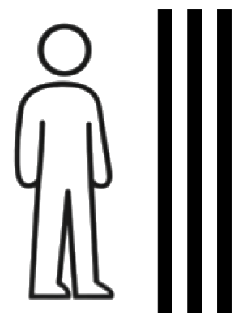
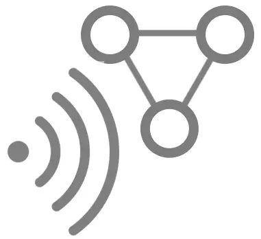
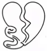
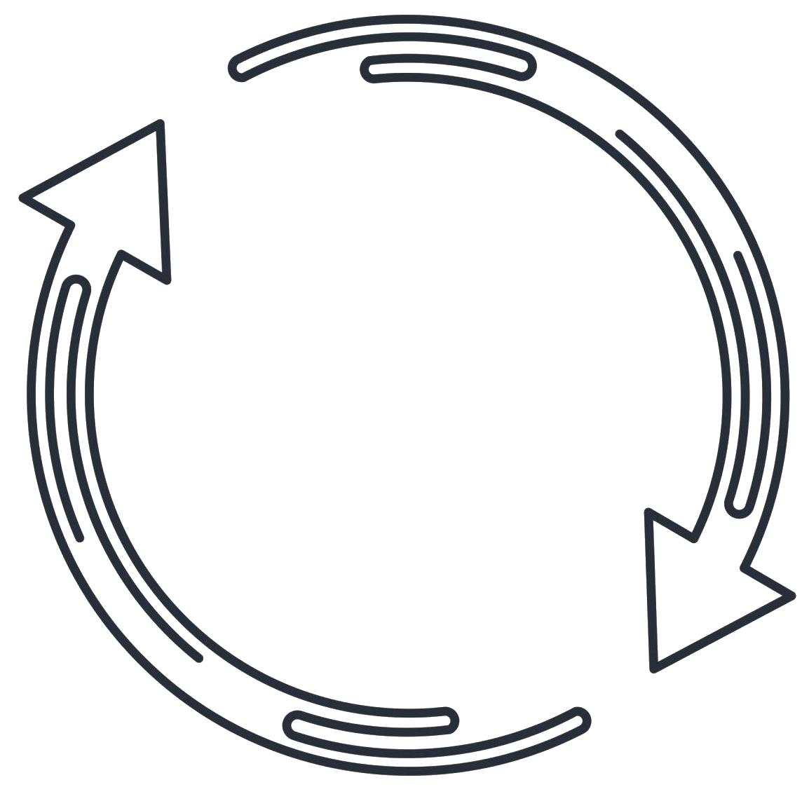
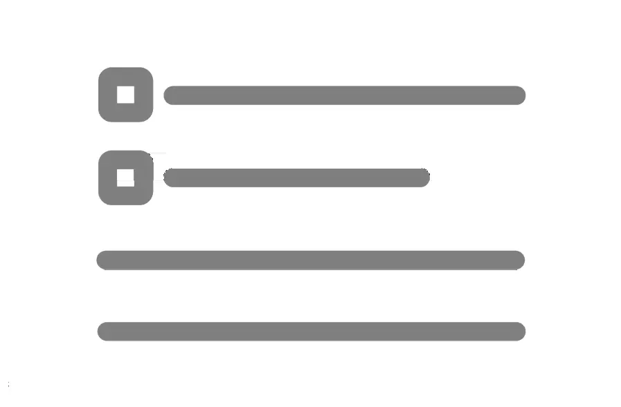

This page provides an alternate way to navigate the essay. Rather than reading straight through from beginning to end, you can start with the section that best matches your main questions, concerns, or interest.
Starting points for exploring this essay are categorized below under the various section headings.
| Topic | Section | |
|---|---|---|
| Start here if your main concern is that modern science and theology seem incompatible. | Appendix: Foundational Questions | |
| Start here if your main
concern is that the Bible doesn’t seem to be a trustworthy historical
document, or if you believe that modern science has debunked Scripture
and reduced it to myth or legend. Note: the main purpose of this essay is to tell the central storyline of Scripture. Therefore, if you reject Scripture, you likely won’t be interested in this essay. On the other hand, many footnotes (End Notes) are provided so that if you are interested, you can read about the concepts in Scripture for yourself. |
Appendix: Scripture & Modern Science |
| Topic | Section | |
|---|---|---|
| Start here if your main concern is that the pervasiveness of evil in the world shows that God cannot be good. | Love Contested: The Mystery of Evil | |
| Start here if your main concern is the presence of natural evil in our world and why a good God would allow so much of it. | Love's Gambit | |
| Read this section if you want to explore the possibility that evil includes unseen spiritual corruption in addition to human failure. | Love Corrupted by Deception |
| Topic | Section | |
|---|---|---|
| Start here if your main concern is that a good God would never consign anyone to an eternal hell or if you believe you’ve never done anything worthy of such a terrible destiny. | Love and the Reality of Hell |  |
| Topic | Section | |
|---|---|---|
| Read this section if you’d like to learn exactly what Jesus says you need to do to be “saved.” | Love Restored: The Remedy | |
| Read this section to learn the unifying theme of the essay as well as its organization. | Introduction | |
| Read this section if you want a visual and conceptual recap of the essay’s main theme. | Recap: The Architecture of Love | |
| Read this section to learn about the author and his motivations for writing the essay. | Foreword |  |
| Topic | Section | |
|---|---|---|
| Read this section for a brief description of the nature of God. | The God Who is Love | |
| Read this section to understand God’s original intent for the cosmos and humanity. This section introduces the Cultural Mandate. | Love Expressed: Imago Dei | |
| Read this section to understand Jesus’ commands to love God and our fellow humans. The concept of Love Precepts is defined here. | Love: An Image Bearer's Behavior | |
| Read this section to understand Adam and Eve’s choice in Eden and the consequences of that choice for humanity. | Love Rejected: The Fall |  |
| Read this section to see why, even after humanity’s rebellion, God still intends to have a people of his own. | Love Revisited: God Still Wants a People |  |
| Read this section to understand God’s remedy for the human condition. | Love Restored: The Remedy | |
| Read this section to see what your life will be transformed into if you accept God’s remedy. | Love Empowered | |
| Read this section for the essay’s closing perspective and invitation. | Epilogue: The Invitation of Love |
| Topic | Section | |
|---|---|---|
| Read this section if you want to explore
the essay’s Scripture references and external sources in more
detail. This includes Scripture references, books, blogs, and
videos for further study. Note: if you hover over the footnote references in the main essay, a pop-up will appear showing the text of that footnote. |
End Notes |  |
Use this table if you’d rather follow the essay in its intended sequence (or just go back to the main essay).
| Section | What it helps you understand | |
|---|---|---|
| Foreword | Why the essay was written and how to approach it. | |
| Introduction | The essay’s unifying theme and overall structure. | |
| The God Who is Love | The nature of God. | |
| Love Expressed: Imago Dei | God’s original intent for humanity and the cosmos. | |
| Love: An Image Bearer's Behavior | What it means for image bearers to live by love. | |
| Love Rejected: The Fall | Humanity’s rebellion and its consequences. | |
| Love Corrupted by Deception | The possibility of unseen spiritual corruption. | |
| Love Contested: The Mystery of Evil | Why moral evil exists in a world made by a good God. | |
| Love's Gambit | Why the natural world includes suffering, risk, and disorder. | |
| Love Revisited: God Still Wants a People | Why God still seeks a people after humanity’s fall. | |
| Love Restored: The Remedy | God’s remedy for the human condition. | |
| Love Empowered | What a transformed life looks like. | |
| Love and the Reality of Hell | How justice, freedom, and hell relate to divine love. | |
| Recap: The Architecture of Love | A diagrammatic and conceptual summary of the essay. | |
| Epilogue: The Invitation of Love | The essay’s concluding perspective and invitation. | |
| Appendix: Foundational Questions | Big-picture questions about reality, existence, and science. | |
| Appendix: Scripture & Modern Science | How biblical claims relate to modern scientific questions. | |
| End Notes | References for further study and source exploration. |